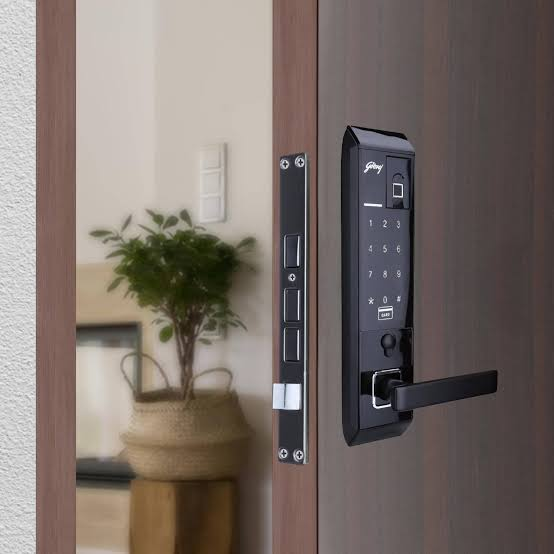

Door locks provide essential security and privacy, acting as an important barrier to protect.Securing your home is a top priority, as it protects your valuable assets. To get the best security, make sure your doors are equipped with high-quality locks.
Padlocks are a widely recognized and preferred choice among door locks. These locks are not permanently
installed; Instead, they offer portability and flexibility.
Deadbolts Lock are a top choice for securing main entrances to homes as they significantly reduce the risk of theft
or burglary.
Doorknob locks represent another popular design that is mainly used for doors of interior rooms such as bathrooms
and bedrooms.
Mortise door locks are a highly preferred choice for large commercial doors, glass entry doors and expensive
buildings.
Electronic locks represent a modern and keyless locking solution. Instead of traditional keys, they rely on a card or
keypad with a unique code to provide access when interfaced with the lock.